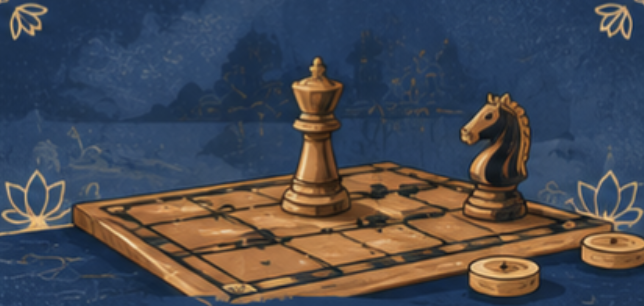
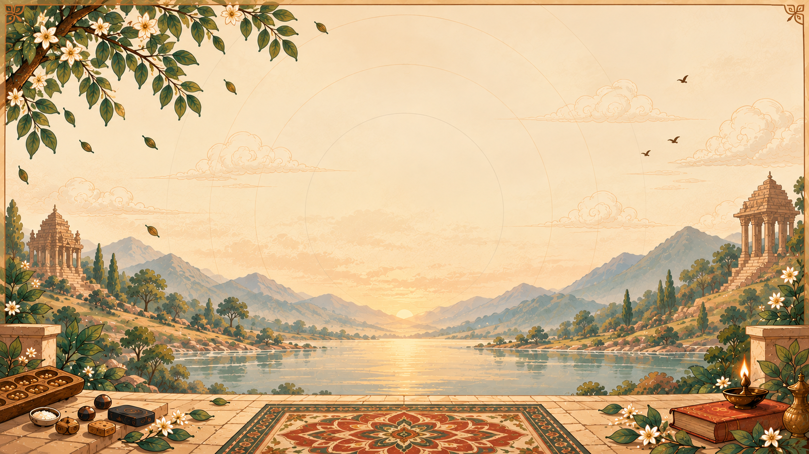
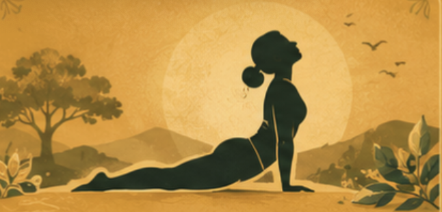
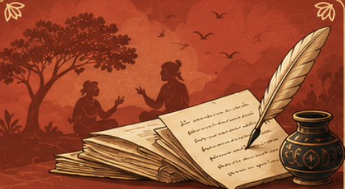

Games
Six centuries-old board games — from Chaturangam to Pallanguzhi — playable offline against Kreedu.


Six centuries-old board games — from Chaturangam to Pallanguzhi — playable offline against Kreedu.

Yoga, Vyayam and Dhyana woven into one daily plan, paced by the ardhashakti principle.

Stories carried by grandmothers and travelling bards, kept here for reading aloud.